MA02-t8 · read_sent — 他說英文。
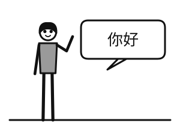
A · laki-laki, bahasa Mandarin B ✔ · laki-laki, bahasa Inggris
B ✔ · laki-laki, bahasa Inggris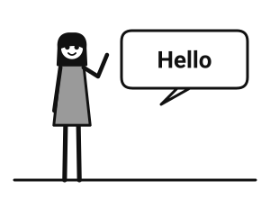
C · perempuan, bahasa InggrisMA02-t9 · read_pick —
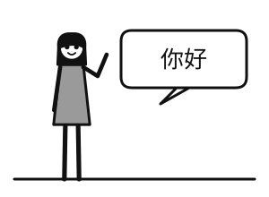
gambar soal · perempuan berbicara bahasa Mandarin他說英文。 / 她是中文。 / ✔ 她說中文。
MA02-t10 · read_gap — 請問，你是（ ）國人？
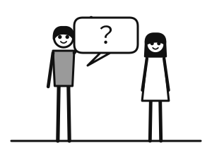
gambar soal · laki-laki bertanya asal negara teman sekelas✔ 哪 / 什麼 / 嗎
MA02-b3 · listen_dialog — 你是哪國人？ 我是印尼人。 問：這位先生是哪國人？
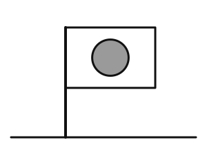
A · Jepang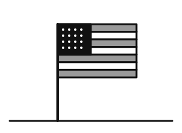
B · Amerika C ✔ · Indonesia
C ✔ · IndonesiaMA02-b4 · listen_dialog — 請問，妳是哪國人？ 我是日本人。你呢？ 我是美國人。 你說中文嗎？ 問：這位小姐是哪國人？
 A ✔ · Jepang
A ✔ · Jepang B · Amerika
B · Amerika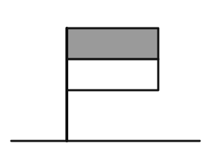
C · IndonesiaMA02-b6 · read_sent — 她是外國人，她說英文。
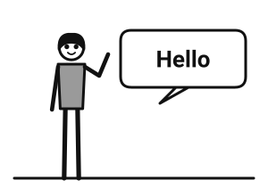
A · laki-laki asing berbahasa Inggris B · perempuan berbahasa Mandarin
B · perempuan berbahasa Mandarin C ✔ · perempuan asing berbahasa Inggris
C ✔ · perempuan asing berbahasa InggrisMA02-b7 · read_pick —
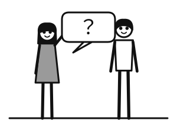
gambar soal · perempuan bertanya asal negara orang lain✔ 請問，你是哪國人？ / 晚安！ / 謝謝，再見！
MA02-b8 · read_gap — 他是外國人，他（ ）中文。
 gambar soal · orang asing berbicara bahasa Mandarin
gambar soal · orang asing berbicara bahasa Mandarin叫 / 是 / ✔ 說
MA04-t8 · read_sent — 我家有五個人。
 A ✔ · lima orang
A ✔ · lima orang B · empat orang
B · empat orang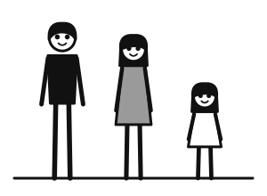
C · tiga orangMA04-t9 · read_pick —
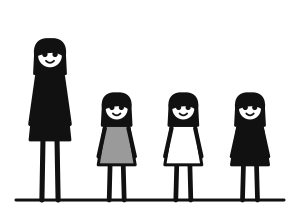
gambar soal · seorang ibu dengan tiga anak perempuan✔ 她有三個女兒。 / 她有三個兒子。 / 她有兩個女兒。
MA04-t10 · read_gap — 陳先生有一個（ ）。
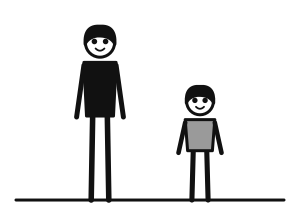
gambar soal · ayah dengan satu anak laki-laki太太 / 女兒 / ✔ 兒子
MA04-b3 · listen_dialog — 你家有幾個人？ 我家有六個人。 問：這位小姐家有幾個人？
 A ✔ · enam orang
A ✔ · enam orang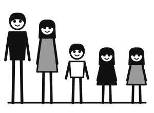
B · lima orang C · empat orang
C · empat orangMA04-b4 · listen_dialog — 你有孩子嗎？ 有，我有三個孩子。 幾個兒子？ 一個兒子，兩個女兒。 問：這位先生有幾個女兒？
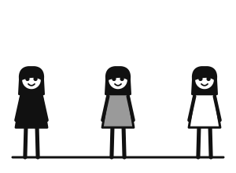
A · tiga anak perempuan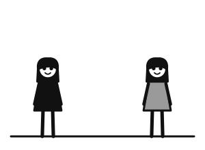
B ✔ · dua anak perempuan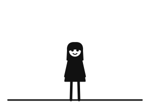
C · satu anak perempuanMA04-b6 · read_sent — 他們家有三個小孩。
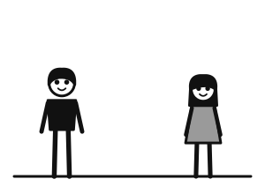
A · dua anak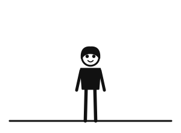
B · satu anak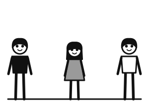
C ✔ · tiga anakMA04-b7 · read_pick —
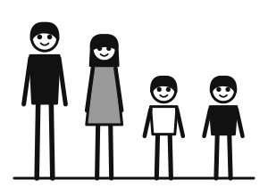
gambar soal · ayah, ibu, dua anak laki-laki✔ 他們有兩個兒子。 / 他們沒有孩子。 / 他們有兩個女兒。
MA04-b8 · read_gap — 李先生有一（ ）女兒。
gambar soal · satu anak perempuan家 / 幾 / ✔ 個
MA09-t8 · read_sent — 桌子下有一個球。
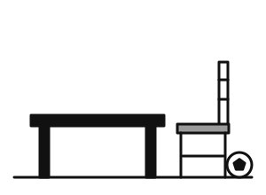
A · bola di samping kursi B · bola di atas meja
B · bola di atas meja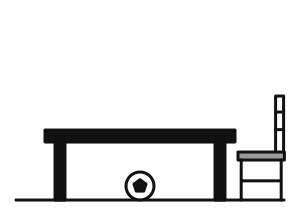
C ✔ · bola di bawah mejaMA09-t9 · read_pick —
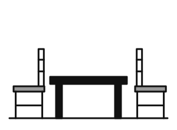
gambar soal · dua kursi di samping meja桌子旁邊有兩個床。 / ✔ 桌子旁邊有兩個椅子。 / 桌子上有兩個椅子。
MA09-t10 · read_gap — 大文（ ）椅子。
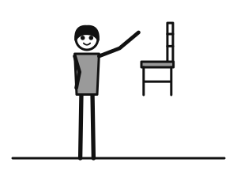
gambar soal · Dawen mengangkat kursi在 / 住 / ✔ 拿
MA09-b3 · listen_dialog — 電視在哪裡？ 電視在床前面。 問：電視在哪裡？
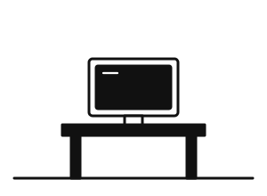
A · TV di atas meja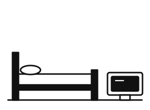
B ✔ · TV di depan kasur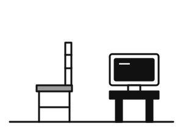
C · TV di samping kursiMA09-b4 · listen_dialog — 我的球在哪裡？ 在桌子上嗎？ 桌子上沒有。 你看，在床下！ 問：球在哪裡？
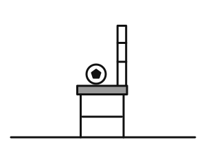
A · di kursi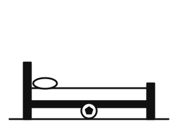
B ✔ · di bawah kasur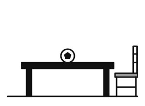
C · di atas mejaMA09-b6 · read_sent — 椅子在桌子後。
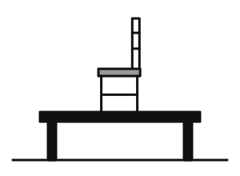
A · kursi di atas meja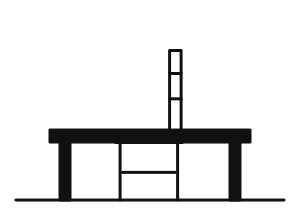
B ✔ · kursi di belakang meja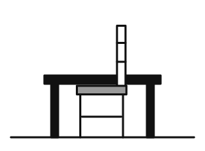
C · kursi di depan mejaMA09-b7 · read_pick —
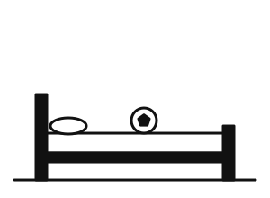
gambar soal · bola di atas kasur桌子上有一個球。 / ✔ 床上有一個球。 / 床下有一個球。
MA09-b8 · read_gap — 桌子（ ）有兩個椅子。
 gambar soal · dua kursi di sisi meja
gambar soal · dua kursi di sisi meja✔ 旁邊 / 裡 / 中
MA10-t8 · read_sent — 現在下午兩點半。
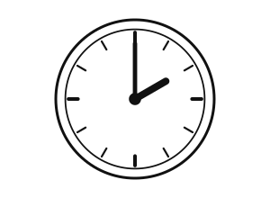
A · 2:00 siang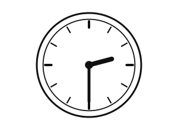
B ✔ · 2:30 siang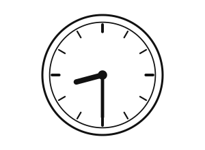
C · 8:30MA10-t9 · read_pick —
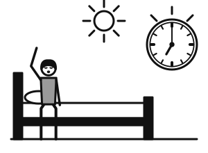
gambar soal · alarm berbunyi di pagi hari他中午做什麼？ / ✔ 他早上起床。 / 他晚上睡覺。
MA10-t10 · read_gap — 現在七（ ）。
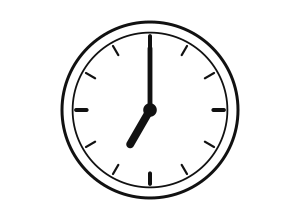
gambar soal · jam 7:00分 / 天 / ✔ 點
MA10-b3 · listen_dialog — 你每天幾點睡覺？ 晚上十點。 問：這位小姐幾點睡覺？
A ✔ · tidur jam 10 malam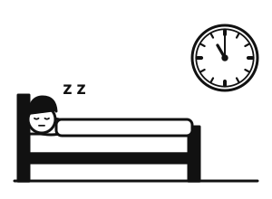
B · tidur jam 11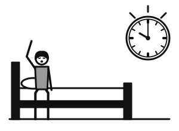
C · bangun jam 10 MA10-b4 · listen_dialog — 現在幾點？ 現在九點五十分。 你幾點做運動？ 十點半。 問：這位先生幾點做運動？
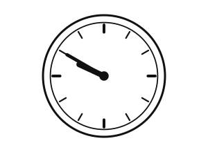
A · 9.50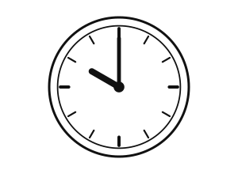
B · 10.00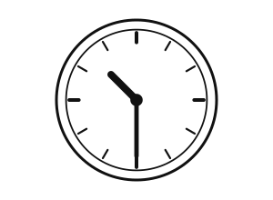
C ✔ · 10.30MA10-b6 · read_sent — 下午兩點，他睡覺。
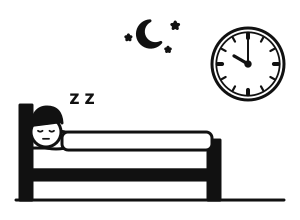
A · tidur jam 10 malam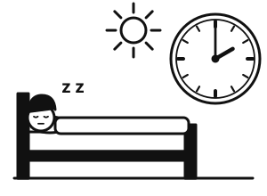
B ✔ · tidur siang jam 2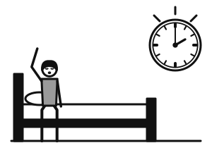
C · bangun jam 2MA10-b7 · read_pick —
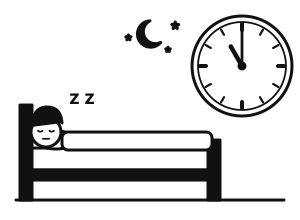
gambar soal · malam hari, tidur✔ 晚上，他睡覺。 / 中午，他起床。 / 早上，他起床。
MA10-b8 · read_gap — 我每天運動三十（ ）。
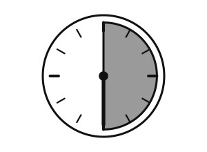
gambar soal · 30 menit半 / ✔ 分鐘 / 點
MA18-t8 · read_sent — 這杯咖啡五十塊。
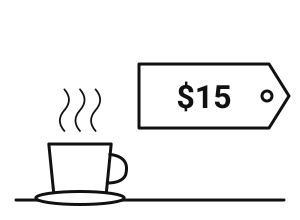
A · kopi NT$15B ✔ · kopi NT$50C · teh NT$50MA18-t9 · read_pick —
gambar soal · penjual memberi uang kembalian他給我二十個。 / ✔ 他找我二十塊。 / 我買二十塊。
MA18-t10 · read_gap — 這個十塊，很（ ）！
gambar soal · label harga NT$10多少 / 貴 / ✔ 便宜
MA18-b3 · listen_dialog — 這個多少錢？ 一千二百塊。 問：這個多少錢？
A · NT$2.100B ✔ · NT$1.200C · NT$1.002
MA18-b4 · listen_dialog — 我要買兩個。一共多少錢？ 一個五十塊，一共一百塊。 我給你兩百塊。 找你一百塊。 問：這位小姐找這位先生多少錢？
A · NT$200B ✔ · NT$100C · NT$50
MA18-b6 · read_sent — 我只有一百塊。
A · banyak uangB · NT$10 C ✔ · hanya NT$100
C ✔ · hanya NT$100 MA18-b7 · read_pick —
gambar soal · berbelanja di toko✔ 我在店裡買東西。 / 我在家睡覺。 / 我在學校上課。
MA18-b8 · read_gap — 這個很（ ），我買兩個。
gambar soal · label harga murah✔ 便宜 / 夠 / 貴
MA24-t8 · read_sent — 今天風很大。
A · cerah B · hujanC ✔ · angin kencang
B · hujanC ✔ · angin kencang MA24-t9 · read_pick —
gambar soal · hari yang sangat panas今天下雨。 / ✔ 今天非常熱。 / 今天非常冷。
MA24-t10 · read_gap — 今天（ ）雨。
 gambar soal · hujan turun
gambar soal · hujan turun上 / 出 / ✔ 下
MA24-b3 · listen_dialog — 明天天氣怎麼樣？ 明天會下雨。 問：明天天氣怎麼樣？
 A · cerah
A · cerah B ✔ · hujanC · salju
B ✔ · hujanC · saljuMA24-b4 · listen_dialog — 臺北今天熱不熱？ 不熱，很冷。 下雨嗎？ 沒下雨，可是風很大。 問：臺北今天天氣怎麼樣？
 A ✔ · dingin dan berangin
A ✔ · dingin dan berangin B · hujan
B · hujan C · panas
C · panasMA24-b6 · read_sent — 臺北七月最熱。
A · hujan B · dinginC ✔ · Juli paling panas
B · dinginC ✔ · Juli paling panas MA24-b7 · read_pick —
gambar soal · bunga di gunung✔ 山上的花很漂亮。 / 山上很熱。 / 山上下雨。
MA24-b8 · read_gap — 這個山不高，很（ ）。
gambar soal · bukit yang rendah最 / 冷 / ✔ 低
MB04-t8 · read_sent — 他正在看電視。
A · main internetB ✔ · menonton TVC · membaca buku
MB04-t9 · read_pick —
gambar soal · dua orang mengobrol lewat ponsel✔ 他們用手機聊天。 / 他們在教室上課。 / 他們一起吃飯。
MB04-t10 · read_gap — 請等（ ），我馬上來！
gambar soal · tunggu sebentar最近 / ✔ 一下子 / 網路
MB04-b3 · listen_dialog — 喂，你在哪裡呢？ 我在家看電視。 問：這位小姐在做什麼？
A · membacaB ✔ · menonton TVC · berinternet
MB04-b4 · listen_dialog — 你最近忙嗎？ 很忙啊，每天都工作。 今天晚上呢？ 今天晚上有空，我們聊天吧。 問：這位先生今天晚上想做什麼？
 A · tidurB · bekerjaC ✔ · mengobrol
A · tidurB · bekerjaC ✔ · mengobrolMB04-b6 · read_sent — 媽媽正在看電視，爸爸正在上網。
A · keduanya menonton TVB ✔ · ibu TV, ayah internetC · ibu internet, ayah TV
MB04-b7 · read_pick —
gambar soal · situs web✔ 這是學校的網站。 / 這是學校的電話。 / 這是學校的教室。
MB04-b8 · read_gap — 請等（ ），他馬上來。
 gambar soal · sebentar
gambar soal · sebentar✔ 一會 / 最近 / 網路
MB19-t8 · read_sent — 我的房間比你的房間大。
A · kamarku lebih kecilB ✔ · kamarku lebih besarC · sama besar
MB19-t9 · read_pick —
gambar soal · kompas: atas utara, bawah selatan上是南，下是北。 / ✔ 上是北，下是南。 / 上是東，下是西。
MB19-t10 · read_gap — 臺灣很小，（ ）很大。
gambar soal · peta dunia✔ 世界 / 聲音 / 北部
MB19-b3 · listen_dialog — 臺北冷還是高雄冷？ 臺北比較冷。 問：哪裡比較冷？
A · Taipei lebih panasB ✔ · Taipei lebih dinginC · sama saja
MB19-b4 · listen_dialog — 你家在臺北的哪裡？ 在臺北的東邊。 我家在西邊。 我們一個在東，一個在西！ 問：這位先生的家在臺北的哪邊？
A · sebelah timurB · sebelah utaraC ✔ · sebelah barat
MB19-b6 · read_sent — 臺灣的北部很冷，南邊很熱。
A · sama sajaB · utara panas, selatan dinginC ✔ · utara dingin, selatan panas
MB19-b7 · read_pick —
 gambar soal · bola dunia
gambar soal · bola dunia✔ 世界很大。 / 臺灣很大。 / 世界很小。
MB19-b8 · read_gap — 我的書包跟你的（ ）。
gambar soal · sama更 / ✔ 一樣 / 比
MB20-t8 · read_sent — 他脫外套。
A · memakai jaketB ✔ · melepas jaketC · memakai topi
MB20-t9 · read_pick —
gambar soal · celana yang terlalu panjang這個褲子很漂亮。 / 這個褲子太短了。 / ✔ 這個褲子太長了。
MB20-t10 · read_gap — 我今天沒（ ）手錶。
gambar soal · jam tangan✔ 戴 / 穿 / 脫
MB20-b3 · listen_dialog — 我可以試這件外套嗎？ 可以，請試。 問：這位先生想試什麼？
A · celana B · topiC ✔ · jaket
B · topiC ✔ · jaket MB20-b4 · listen_dialog — 這個裙子怎麼樣？ 很漂亮，可是有點短。 這個呢？ 這個很好。 問：這位先生覺得第一個裙子怎麼樣？
A ✔ · agak pendekB · terlalu panjangC · pas
MB20-b6 · read_sent — 他戴眼鏡，也戴手錶。
A ✔ · kacamata & jam tanganB · hanya kacamataC · topi & jam tangan
MB20-b7 · read_pick —
gambar soal · celana terlalu pendek✔ 這個褲子太短了。 / 這個褲子很新。 / 這個褲子太長了。
MB20-b8 · read_gap — 房間很熱，我想（ ）外套。
gambar soal · melepas jaket試 / 戴 / ✔ 脫
MB30-t8 · read_sent — 在十字路口往右轉。
A · lurusB ✔ · belok kanan di perempatanC · belok kiri
MB30-t9 · read_pick —
gambar soal · berjalan lurus ke depan往後走。 / ✔ 往前走。 / 往右轉。
MB30-t10 · read_gap — 我晚上十點回（ ）家。
gambar soal · sampai di rumah✔ 到 / 向 / 往
MB30-b3 · listen_dialog — 圖書館怎麼走？ 往前走，經過一個公園就到了。 問：圖書館怎麼走？
 A · belok kiriB ✔ · lurus, lewat tamanC · naik bus
A · belok kiriB ✔ · lurus, lewat tamanC · naik busMB30-b4 · listen_dialog — 我們在第幾個路口轉？ 第二個。 往左還是往右？ 往左。 問：他們在哪裡轉？
 A · persimpangan ke-1, ke kiri
A · persimpangan ke-1, ke kiri B ✔ · persimpangan ke-2, ke kiri
B ✔ · persimpangan ke-2, ke kiri C · persimpangan ke-2, ke kanan
C · persimpangan ke-2, ke kananMB30-b6 · read_sent — 書放在桌子上。
 A ✔ · buku di atas mejaB · buku di kasurC · buku di tas
A ✔ · buku di atas mejaB · buku di kasurC · buku di tasMB30-b7 · read_pick —
gambar soal · perempatan這是公園。 / 這是車站。 / ✔ 這是十字路口。
MB30-b8 · read_gap — 你（ ）前走，就到了。
gambar soal · menuju ke depan轉 / ✔ 往 / 回
MB33-t8 · read_sent — 我已經吃了三個包子。
A · satu bakpauB ✔ · sudah makan tiga bakpauC · makan mi
MB33-t9 · read_pick —
gambar soal · bepergian dengan pesawat我們去上班。 / ✔ 我們去旅行。 / 我們在家休息。
MB33-t10 · read_gap — 我（ ）他是日本人，他是韓國人。
gambar soal · terkejut✔ 以為 / 已經 / 當然
MB33-b3 · listen_dialog — 你是跟誰來的？ 我是跟我姊姊來的。 問：這位小姐跟誰來？
A · bersama ayahB · sendirianC ✔ · bersama kakak perempuan
MB33-b4 · listen_dialog — 你去日本旅行了嗎？ 去了，我在那裡住了五天。 你喜歡嗎？ 當然喜歡！ 問：這位先生在日本住了幾天？
A · 15 hariB ✔ · 5 hariC · 2 hari
MB33-b6 · read_sent — 我剛剛吃了兩個包子。
 A · satu bakpau
A · satu bakpau B · tiga bakpauC ✔ · baru makan dua bakpau
B · tiga bakpauC ✔ · baru makan dua bakpauMB33-b7 · read_pick —
gambar soal · bepergian✔ 我們去旅行。 / 我們回家。 / 我們去上班。
MB33-b8 · read_gap — 我（ ）今天是星期六，今天是星期五！
gambar soal · salah mengira✔ 以為 / 好像 / 當然
MB40-t8 · read_sent — 因為下雨，所以我們不去公園。
A · hujan, tetap ke tamanB ✔ · hujan, tinggal di rumahC · cerah, ke taman
MB40-t9 · read_pick —
gambar soal · makan sehat dan olahraga✔ 多運動，身體很健康。 / 他不喜歡運動。 / 他常常生病。
MB40-t10 · read_gap — 雖然下雨，（ ）我還是去學校。
gambar soal · hujan, tetapi tetap berangkat因為 / ✔ 但是 / 所以
MB40-b3 · listen_dialog — 你身體健康嗎？ 很健康，我每天運動。 問：這位先生的身體怎麼樣？
A · lelahB ✔ · sehatC · sakit
MB40-b4 · listen_dialog — 你今天為什麼沒來？ 因為我感冒了。 現在好一點了嗎？ 好一點了，不過還有點累。 問：這位小姐現在怎麼樣？
A · makin parahB · sehat sepenuhnyaC ✔ · agak baikan, masih lelah
MB40-b6 · read_sent — 因為他生病，所以沒去上課。
A ✔ · sakit, tidak sekolahB · main bolaC · ke sekolah
MB40-b7 · read_pick —
gambar soal · buah dan tubuh sehat水果不健康。 / 多吃糖，身體很健康。 / ✔ 多吃水果，身體很健康。
MB40-b8 · read_gap — 他早上八點上課，可是十點（ ）來。
gambar soal · baru datang jam 10✔ 才 / 但是 / 就
MC04-t8 · read_sent — 請把這張桌子搬到院子裡去。
A · meja di dalam rumahB ✔ · mengangkat meja ke halamanC · meja di kamar tidur
MC04-t9 · read_pick —
gambar soal · kucing di bawah kursi貓在椅子上。 / 貓在床上。 / ✔ 貓在椅子底下。
MC04-t10 · read_gap — 這（ ）大樓有二十層。
gambar soal · gedung tinggi✔ 座 / 張 / 件
MC04-b3 · listen_dialog — 我的鞋子呢？ 在床底下，不在門口。 問：鞋子在哪裡？
A · di pintuB ✔ · di bawah ranjangC · di sofa
MC04-b4 · listen_dialog — 這座房子真大！有幾個臥室？ 四個，都在樓上。 樓下呢？ 樓下是客廳和廚房。 問：樓下有什麼？
A · kamar tidurB ✔ · ruang tamu dan dapurC · halaman
MC04-b6 · read_sent — 爸爸把新沙發放在客廳裡了。
A ✔ · sofa di ruang tamuB · sofa di kamar tidurC · sofa di halaman
MC04-b7 · read_pick —
gambar soal · rumah dengan halaman這座房子沒有院子。 / ✔ 這座房子有院子。 / 這是一座很高的大樓。
MC04-b8 · read_gap — 你的鞋子別放在床底下，把它們放（ ）門口去。
gambar soal · sepatu dipindah ke pintu✔ 到 / 在 / 給
MC16-t8 · read_sent — 晚上十點了，他還在公司寫報告。
A · siang di kantorB ✔ · malam di kantor menulis laporanC · malam di rumah menonton TV
MC16-t9 · read_pick —
 gambar soal · menulis laporan
gambar soal · menulis laporan✔ 他在寫報告。 / 他在開會。 / 他在打電話。
MC16-t10 · read_gap — 明天是星期天，你（ ）來公司。
gambar soal · santai di rumah, tidak perlu ke kantor✔ 不用 / 必須 / 要求
MC16-b3 · listen_dialog — 你今天也要加班嗎？ 不用，昨天我已經把工作做完了。 問：這位先生今天要做什麼？
 A · lemburB ✔ · pulang tepat waktuC · menulis laporan
A · lemburB ✔ · pulang tepat waktuC · menulis laporanMC16-b4 · listen_dialog — 老闆要求我們每天寫報告嗎？ 不是每天，一個星期寫一次。 星期幾交？ 星期五下午。 問：什麼時候要交報告？
A · setiap hariB ✔ · Jumat soreC · Senin pagi
MC16-b6 · read_sent — 今天不用加班，他五點就回家了。
A ✔ · jam 5 pulang ke rumahB · malam masih di kantorC · jam 5 masih di kantor
MC16-b7 · read_pick —
gambar soal · rapat他們在吃飯。 / ✔ 他們在開會。 / 他們在上課。
MC16-b8 · read_gap — 明天早上以前，你（ ）交報告。
gambar soal · laporan wajib diserahkan✔ 必須 / 要求 / 不用了
MC24-t8 · read_sent — 要是颱風來了，我們就在家看電視。
 A · cerah, ke pantaiB ✔ · topan, menonton TV di rumahC · topan, berjalan di luar
A · cerah, ke pantaiB ✔ · topan, menonton TV di rumahC · topan, berjalan di luarMC24-t9 · read_pick —
gambar soal · pemandian air panas這裡在下雪。 / 這裡是游泳池。 / ✔ 這裡有溫泉。
MC24-t10 · read_gap — 今天的天氣大概二十（ ），不冷也不熱。
gambar soal · 20 derajat✔ 度 / 點 / 號
MC24-b3 · listen_dialog — 明天會下雨嗎？ 新聞說颱風的中心在南方，臺北大概不會下雨。 問：臺北明天大概會怎麼樣？
 A · hujanB ✔ · tidak hujanC · topan
A · hujanB ✔ · tidak hujanC · topanMC24-b4 · listen_dialog — 溫泉的地點在哪裡？ 從這裡走路去，大概二十分鐘。 要是走路太遠的話，我們可以坐公車嗎？ 可以，公車十分鐘就到。 問：坐公車去溫泉要多久？
A · 20 menitB ✔ · 10 menitC · 30 menit
MC24-b6 · read_sent — 颱風來了的話，學校就不上課了。
A · cerah, sekolahB · topan, tetap sekolahC ✔ · topan, sekolah libur
MC24-b7 · read_pick —
gambar soal · musim semi, sejuk冬天很冷。 / ✔ 春季的天氣很舒服。 / 夏天熱得不得了。
MC24-b8 · read_gap — 颱風的（ ）是往北走。
gambar soal · topan bergerak ke utara✔ 方向 / 地點 / 度
MC28-t8 · read_sent — 他跑了一個小時，流了很多汗。
A · bersinB ✔ · berlari berkeringatC · tidur
MC28-t9 · read_pick —
 gambar soal · demam
gambar soal · demam他很好。 / 他在運動。 / ✔ 他發燒了。
MC28-t10 · read_gap — 我的蛋糕被弟弟吃（ ）了！
gambar soal · kue dihabiskan✔ 掉 / 得 / 好
MC28-b3 · listen_dialog — 你的藥呢？ 被我的狗吃掉了。 問：藥怎麼了？
 A · dimakan adikB · dibuangC ✔ · dimakan anjing
A · dimakan adikB · dibuangC ✔ · dimakan anjingMC28-b4 · listen_dialog — 醫生，我一直咳嗽，也流鼻水。 發燒嗎？ 不發燒，可是晚上咳得不能睡覺。 我給你一點藥，多喝水。 問：這位先生哪裡不舒服？
A · demam B ✔ · batuk dan pilek
B ✔ · batuk dan pilek C · kaki sakit
C · kaki sakit MC28-b6 · read_sent — 弟弟被這個感冒弄得很累，一直在床上。
 A · main bolaB · belajar
A · main bolaB · belajar C ✔ · sakit di tempat tidur
C ✔ · sakit di tempat tidurMC28-b7 · read_pick —
gambar soal · pilek他在流汗。 / ✔ 他在流鼻水。 / 他在笑。
MC28-b8 · read_gap — 他的病很（ ），醫生讓他在醫院住幾天。
gambar soal · sakit parah✔ 嚴重 / 發燒 / 咳嗽
MC40-t8 · read_sent — 這雙鞋大了一點，我要小一點的。
A · sepatu kekecilanB ✔ · sepatu kebesaranC · sepatu pas
MC40-t9 · read_pick —
gambar soal · pasar malam ramai夜市沒有人。 / 夜市打折。 / ✔ 夜市很熱鬧。
MC40-t10 · read_gap — 這家店的東西都打五（ ）。
gambar soal · diskon 50%✔ 折 / 倍 / 件
MC40-b3 · listen_dialog — 那家店今天打幾折？ 上個星期打九折，今天打七折。 問：那家店今天打幾折？
A · diskon 10% (九折)B ✔ · diskon 30% (七折)C · diskon 50%
MC40-b4 · listen_dialog — 我們去逛街吧！ 好啊，去哪裡？ 百貨公司今天打折，可是人一定很多。 那我們去夜市吧，比較熱鬧，也比較便宜。 問：他們要去哪裡？
A · mal B ✔ · pasar malamC · di rumah
B ✔ · pasar malamC · di rumah MC40-b6 · read_sent — 店門口有很多人在排隊。
A · toko kosongB ✔ · antre di depan tokoC · toko tutup
MC40-b7 · read_pick —
gambar soal · baju kebesaran這件衣服小了一點。 / 這件衣服打折了。 / ✔ 這件衣服大了一點。
MC40-b8 · read_gap — 週末我喜歡跟朋友去（ ）。
gambar soal · jalan-jalan belanja✔ 逛街 / 排隊 / 打折
MC58-t8 · read_sent — 考完試，他覺得很輕鬆。
A · cemas belajarB ✔ · lega selesai ujian C · tidur
C · tidur MC58-t9 · read_pick —
gambar soal · terkagum pemandangan好煩啊！ / 好可怕！ / ✔ 哇！好漂亮！
MC58-t10 · read_gap — （ ）你還記得我的生日！
gambar soal · hadiah tak terduga✔ 沒想到 / 不但 / 而且
MC58-b3 · listen_dialog — 你的新工作怎麼樣？ 不只錢多，而且離家很近。 問：這位小姐覺得新工作怎麼樣？
A · gaji besar sajaB ✔ · gaji besar dan dekat rumahC · dekat rumah saja
MC58-b4 · listen_dialog — 你的心情怎麼樣？ 不太好，我的狗生病了。 別擔心，它會好的。 謝謝你。 問：這位先生為什麼心情不好？
A · ujianB · uang habisC ✔ · anjingnya sakit
MC58-b6 · read_sent — 她今天心情很好，一直在笑。
A · sedihB ✔ · tersenyum senangC · marah
MC58-b7 · read_pick —
gambar soal · pesta kejutan今天沒有人來。 / 我在寫報告。 / ✔ 沒想到大家給我辦了派對！
MC58-b8 · read_gap — 放假了，我的心情很（ ）。
gambar soal · santai✔ 輕鬆 / 不但 / 沒想到